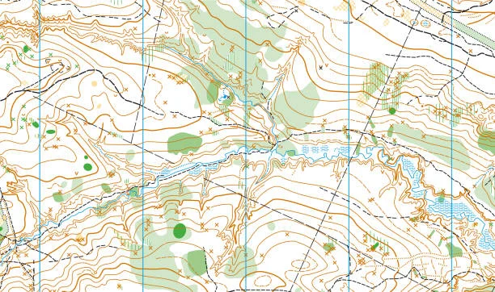
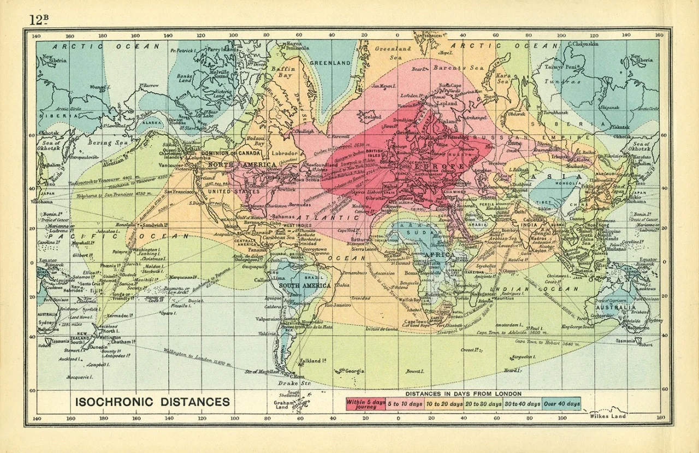
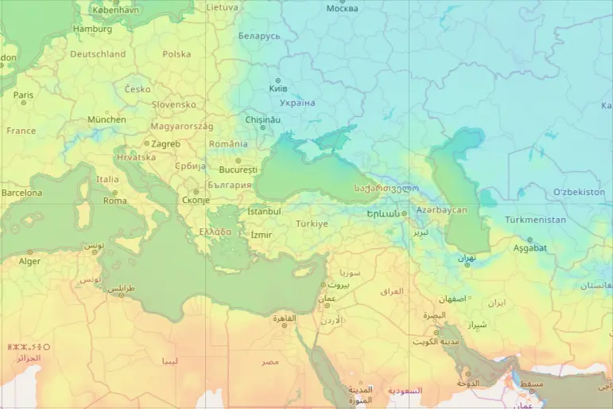
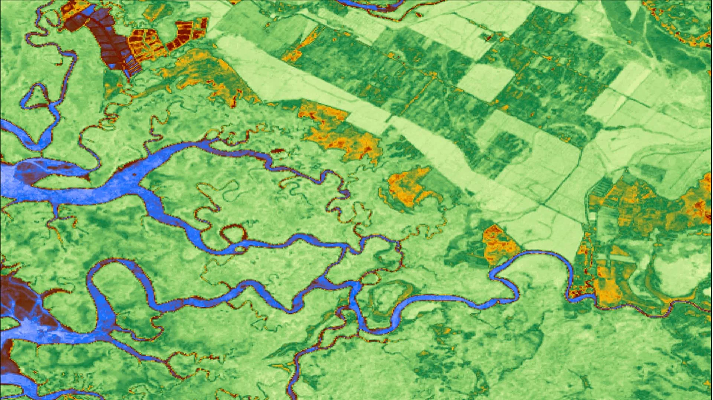
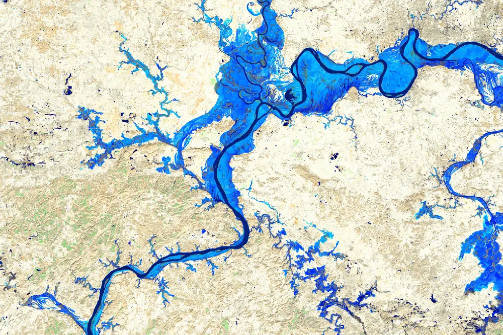

Profil topographique
Import d'un MNT pour réaliser des profils topographiques intéractifs sur Leaflet.js et Dash.

Générateur d'isochrone
Utilisation de l'API d'openrouteserivce pour la cartographie d'isochrone avec Leaflet

Analyse de potentiel éolien
Analyses et visualisation interactives de données météos faites avec Pandas et Dash.

Analyse de données de température
Analyses et visualisations interactives de données météos faites avec Pandas, Leaflet et Dash.

Visualisation d'occupation des sols
Import des données de landuse d'OpenStreetMap pour afficher leur répartition dans un diagramme circulaire.

Génération 3D de cours d'eau
Import d'un MNT et d'une couche vecteur pour réaliser un tracé.